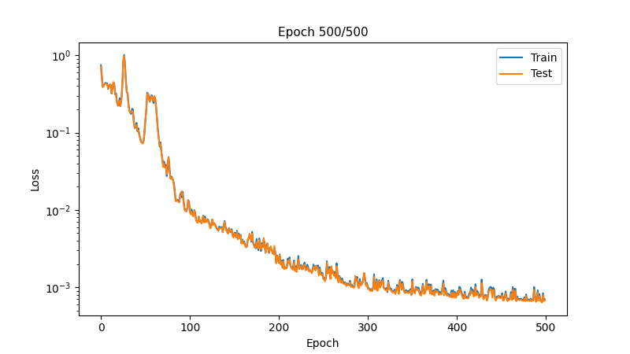

Learning an antiderivative operator¶
This tutorial demonstrates how to train a Fourier neural operator (FNO) to learn an antiderivative operator.
Problem statement¶
We'll train an FNO to learn the mapping \(G : u \rightarrow v\), where $$ v(x) = \frac{du}{dx} $$ for $$ u(x) = \sin(\alpha x), \quad x \in [0, 2\pi], \quad \alpha \in [0.5, 1] $$ and where \(u\), \(v\) have periodic boundary conditions.
Spatial discretisation¶
A uniform finite difference discretisation of the domain leads to grid points $$ x_i = i h, \quad i = 0, \ldots, n-1 $$ where the grid spacing \(h = L / n\) and \(n\) is the number of grid points. The periodic boundary conditions imply that \(x_0\) = \(x_n\).
Implementation¶
Data generation¶
Create synthetic training data:
import jax
import jax.numpy as jnp
key = jax.random.key(0)
# Configuration
resolution = 32
n_samples = 120
n_train = 100
n_test = 20
# Domain
L = 2 * jnp.pi
h = L / resolution
grid = jnp.linspace(0, L - h, resolution)
# Generate u and v
alpha = 0.5 * (1 + jax.random.uniform(key, (n_samples,)))
u_data = [jnp.sin(alpha[i] * grid) for i in range(n_samples)]
v_data = [alpha[i] * jnp.cos(alpha[i] * grid) for i in range(n_samples)]
# Stack into tensors
x_coords = jnp.tile(grid, (n_samples, 1))
u = jnp.stack(u_data)
v = jnp.stack(v_data)
# Create input with shape (batch, features, grid)
# Input features: [u(x), x]
input_data = jnp.stack([u, x_coords], axis=-1)
input_data = jnp.permute_dims(input_data, (0, 2, 1))
# Output with shape (batch, features, grid)
output_data = v[:, None, :]
# Split into train and test sets
train_ds = {
'input': input_data[:n_train],
'output': output_data[:n_train]
}
test_ds = {
'input': input_data[-n_test:],
'output': output_data[-n_test:]
}
Create an iterator for batching the data:
from typing import Dict
class DatasetIterator:
def __init__(
self,
dataset: Dict[str, jnp.ndarray],
batch_size: int,
shuffle: bool = True
):
self.dataset = dataset
self.batch_size = batch_size
self.shuffle = shuffle
self.n_samples = dataset['input'].shape[0]
self.reset()
def reset(self, key=jax.random.key(0)):
"""Reset iterator with optional reshuffling"""
self.indices = jnp.arange(self.n_samples)
if self.shuffle:
self.indices = jax.random.permutation(key, self.indices)
self.current_idx = 0
def __iter__(self):
return self
def __next__(self) -> Dict[str, jnp.ndarray]:
if self.current_idx >= self.n_samples:
raise StopIteration
start_idx = self.current_idx
end_idx = min(start_idx + self.batch_size, self.n_samples)
batch_indices = self.indices[start_idx:end_idx]
batch = {
'input': self.dataset['input'][batch_indices],
'output': self.dataset['output'][batch_indices]
}
self.current_idx = end_idx
return batch
def __len__(self):
return (self.n_samples + self.batch_size - 1) // self.batch_size
Model creation¶
Create an FNO1D model instance:
from flax import nnx
import jax_fno
model = jax_fno.FNO1D(
key,
input_dim=2, # [u(x), x]
output_dim=1, # [v(x)]
width=64, # Hidden dimension
n_modes=12, # Number of learnable Fourier modes
n_layers=4, # Number of Fourier layers
projection_hidden=128, # Hidden size in projection layer
)
# Print model structure
nnx.display(model)
Verify forward pass works:
x = train_ds['input'][:2]
y = model(x)
print(f"Input shape: {x.shape}")
print(f"Output shape: {y.shape}")
Training¶
Create an optax optimiser with an exponentially decaying learning rate:
import optax
# Learning rate schedule
learning_rate = 1e-3
batch_size = 16
steps_per_epoch = (n_train + batch_size - 1) // batch_size
schedule = optax.schedules.exponential_decay(
learning_rate,
transition_steps=steps_per_epoch * 100, # Decay every 100 epochs
decay_rate=0.5,
staircase=True
)
optimizer = nnx.Optimizer(model, optax.adam(schedule), wrt=nnx.Param)
metrics = nnx.MultiMetric(loss=nnx.metrics.Average('loss'))
Define loss and training functions:
def l2_loss(pred, target, eps=1e-6):
"""Relative L2 loss"""
numerator = jnp.sum((pred - target)**2, axis=-1)
denominator = jnp.sum(target**2, axis=-1) + eps
return jnp.mean(numerator / denominator)
def loss_fn(model, inputs, targets):
predictions = model(inputs)
return l2_loss(predictions, targets)
@nnx.jit
def train_step(model, optimizer, metrics, inputs, targets):
grad_fn = nnx.value_and_grad(loss_fn)
loss, grads = grad_fn(model, inputs, targets)
metrics.update(loss=loss)
optimizer.update(model, grads)
@nnx.jit
def eval_step(model, metrics, inputs, targets):
loss = loss_fn(model, inputs, targets)
metrics.update(loss=loss)
Train the model:
import matplotlib.pyplot as plt
from IPython.display import clear_output
n_epochs = 500
metrics_history = {'train_loss': [], 'test_loss': []}
train_iter = DatasetIterator(train_ds, batch_size=batch_size)
test_iter = DatasetIterator(
test_ds, batch_size=batch_size, shuffle=False
)
shuffle_key = jax.random.key(0)
for epoch in range(1, n_epochs + 1):
# Training
model.train()
for batch in train_iter:
train_step(model, optimizer, metrics, batch['input'], batch['output'])
shuffle_key, subkey = jax.random.split(shuffle_key)
train_iter.reset(subkey)
metrics_history['train_loss'].append(metrics.compute()["loss"])
# Evaluation
model.eval()
for batch in test_iter:
eval_step(model, metrics, batch["input"], batch["output"])
test_iter.reset()
metrics_history["test_loss"].append(metrics.compute()["loss"])
metrics.reset()
# Plot progress
if epoch % 10 == 0:
clear_output(wait=True)
fig, ax = plt.subplots(figsize=(8, 4.5))
ax.set_xlabel('Epoch', fontsize=10)
ax.set_ylabel('Loss', fontsize=10)
ax.set_yscale('log')
ax.plot(metrics_history['train_loss'], label='Train')
ax.plot(metrics_history['test_loss'], label='Test')
ax.legend()
ax.set_title(f'Epoch {epoch}/{n_epochs}', fontsize=11)
plt.show()

Evaluation¶
Make predictions on test set:
model.eval()
n_examples = 3
n_test = test_ds['input'].shape[0]
example_indices = jnp.array([0, n_test//2, n_test-1])
selected_inputs = test_ds['input'][example_indices]
selected_outputs = test_ds['output'][example_indices]
predictions = model(selected_inputs)
# Visualise results
fig, axes = plt.subplots(1, n_examples, figsize=(12, 4), layout='tight')
for i, (ax, idx) in enumerate(zip(axes, example_indices)):
x = selected_inputs[i, 1, :]
u0 = selected_inputs[i, 0, :]
v_true = selected_outputs[i, 0, :]
v_pred = predictions[i, 0, :]
# Plot
ax.plot(x, u0, '-', label='Input $u$', linewidth=2, alpha=0.8)
ax.plot(x, v_pred, '-', label='Predicted $v$', linewidth=2, alpha=0.8)
ax.plot(x, v_true, ':', label='Ground truth $v$', linewidth=2, alpha=0.8)
# Error
l2_error = jnp.linalg.norm(v_pred - v_true) / jnp.linalg.norm(v_true)
ax.set_title(f'Sample {idx}, L2 Error: {l2_error:.2e}', fontsize=11)
ax.set_xlabel('$x$', fontsize=10)
ax.legend(fontsize=10)
plt.show()